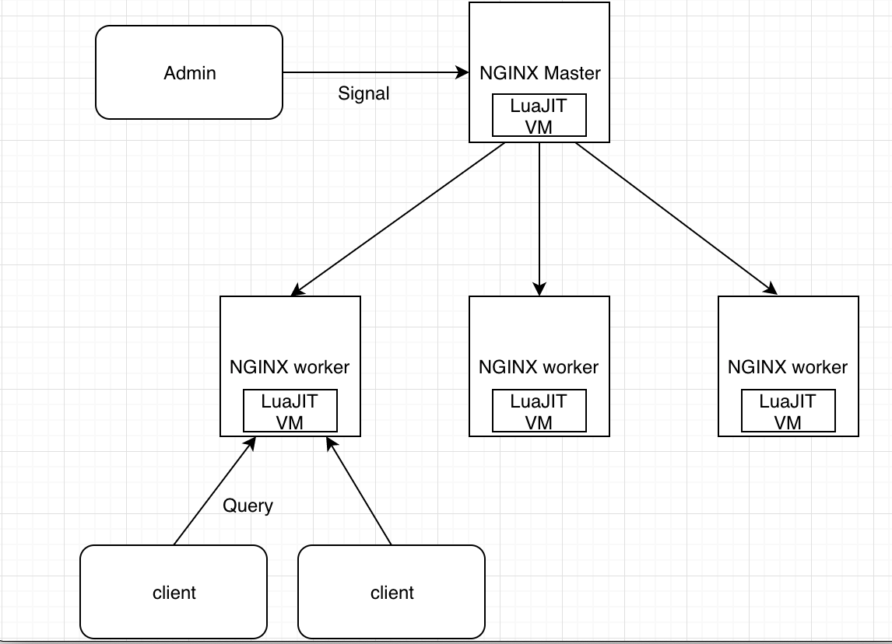
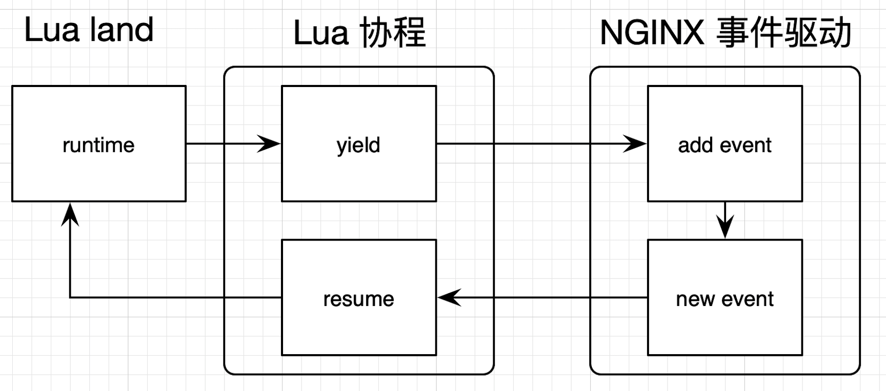

- 00 开篇词 OpenResty，为你打开高性能开发的大门.md
- 01 初探OpenResty的三大特性.md
- 02 如何写出你的“hello world”？.md
- 03 揪出隐藏在背后的那些子项目.md
- 04 如何管理第三方包？从包管理工具luarocks和opm说起.md
- 05 [视频]opm项目导读.md
- 06 OpenResty 中用到的 NGINX 知识.md
- 07 带你快速上手 Lua.md
- 08 LuaJIT分支和标准Lua有什么不同？.md
- 09 为什么 lua-resty-core 性能更高一些？.md
- 10 JIT编译器的死穴：为什么要避免使用 NYI ？.md
- 11 剖析Lua唯一的数据结构table和metatable特性.md
- 12 高手秘诀：识别Lua的独有概念和坑.md
- 13 [视频]实战：基于FFI实现的lua-resty-lrucache.md
- 14 答疑（一）：Lua 规则和 NGINX 配置文件产生冲突怎么办？.md
- 15 OpenResty 和别的开发平台有什么不同？.md
- 16 秒杀大多数开发问题的两个利器：文档和测试案例.md
- 17 为什么能成为更好的Web服务器？动态处理请求和响应是关键.md
- 18 worker间的通信法宝：最重要的数据结构之shared dict.md
- 19 OpenResty 的核心和精髓：cosocket.md
- 20 超越 Web 服务器：特权进程和定时任务.md
- 21 带你玩转时间、正则表达式等常用API.md
- 22 [视频]从一个安全漏洞说起，探寻API性能和安全的平衡.md
- 23 [视频]导读lua-resty-requests：优秀的lua-resty-_是如何编写的？.md
- 24 实战：处理四层流量，实现Memcached Server.md
- 25 答疑（二）：特权进程的权限到底是什么？.md
- 26 代码贡献者的拦路虎：test__nginx 简介.md
- 27 test__nginx 包罗万象的测试方法.md
- 28 test__nginx 还可以这样用？.md
- 29 最容易失准的性能测试？你需要压测工具界的“悍马”wrk.md
- 30 答疑（三）如何搭建测试的网络结构？.md
- 31 性能下降10倍的真凶：阻塞函数.md
- 32 让人又恨又爱的字符串操作.md
- 33 性能提升10倍的秘诀：必须用好 table.md
- 34 特别放送：OpenResty编码指南.md
- 35 [视频]实际项目中的性能优化：ingress-nginx中的几个PR解读.md
- 36 盘点OpenResty的各种调试手段.md
- 37 systemtap-toolkit和stapxx：如何用数据搞定“疑难杂症”？.md
- 38 [视频]巧用wrk和火焰图，科学定位性能瓶颈.md
- 39 高性能的关键：shared dict 缓存和 lru 缓存.md
- 40 缓存与风暴并存，谁说缓存风暴不可避免？.md
- 41 lua-resty-_ 封装，让你远离多级缓存之痛.md
- 42 如何应对突发流量：漏桶和令牌桶的概念.md
- 43 灵活实现动态限流限速，其实没有那么难.md
- 44 OpenResty 的杀手锏：动态.md
- 45 不得不提的能力外延：OpenResty常用的第三方库.md
- 46 答疑（四）：共享字典的缓存是必须的吗？.md
- 47 微服务API网关搭建三步曲（一）.md
- 48 微服务API网关搭建三步曲（二）.md
- 49 微服务API网关搭建三步曲（三）.md
- 50 答疑（五）：如何在工作中引入 OpenResty？.md
- 结束语 行百里者半九十.md
15 OpenResty 和别的开发平台有什么不同？
你好，我是温铭。
上一模块中， 你已经学习了 OpenResty 的两个基石：NGINX 和 LuaJIT，相信你已经摩拳擦掌，准备开始学习 OpenResty 提供的 API 了吧？
不过，别着急，在这之前，你还需要再花一点儿时间，来熟悉下 OpenResty 的原理和基本概念。
原理
在前面的 LuaJIT 内容中，你已经见过下面这个架构图：

这里我再详细解释一下。
OpenResty 的 master 和 worker 进程中，都包含一个 LuaJIT VM。在同一个进程内的所有协程，都会共享这个 VM，并在这个 VM 中运行 Lua 代码。
而在同一个时间点上，每个 worker 进程只能处理一个用户的请求，也就是只有一个协程在运行。看到这里，你可能会有一个疑问：NGINX 既然能够支持 C10K （上万并发），不是需要同时处理一万个请求吗？
当然不是，NGINX 实际上是通过 epoll 的事件驱动，来减少等待和空转，才尽可能地让 CPU 资源都用于处理用户的请求。毕竟，只有单个的请求被足够快地处理完，整体才能达到高性能的目的。如果采用的是多线程模式，让一个请求对应一个线程，那么在 C10K 的情况下，资源很容易就会被耗尽的。
在 OpenResty 层面，Lua 的协程会与 NGINX 的事件机制相互配合。如果 Lua 代码中出现类似查询 MySQL 数据库这样的 I/O 操作，就会先调用 Lua 协程的 yield 把自己挂起，然后在 NGINX 中注册回调；在 I/O 操作完成（也可能是超时或者出错）后，再由 NGINX 回调 resume 来唤醒 Lua 协程。这样就完成了 Lua 协程和 NGINX 事件驱动的配合，避免在 Lua 代码中写回调。
我们可以来看下面这张图，描述了这整个流程。其中，lua_yield 和 lua_resume 都属于 Lua 提供的 lua_CFunction。

另外一个方面，如果 Lua 代码中没有 I/O 或者 sleep 操作，比如全是密集的加解密运算，那么 Lua 协程就会一直占用 LuaJIT VM，直到处理完整个请求。
下面我提供了 ngx.sleep 的一段源码，可以帮你更清晰理解这一点。 这段代码位于 ngx_http_lua_sleep.c 中，你可以在 lua-nginx-module 项目的 src 目录中找到它。
在ngx_http_lua_sleep.c 中，我们可以看到 sleep 函数的具体实现。你需要先通过 C 函数 ngx_http_lua_ngx_sleep，来注册 ngx.sleep 这个 Lua API：
void
ngx_http_lua_inject_sleep_api(lua_State *L)
{
lua_pushcfunction(L, ngx_http_lua_ngx_sleep);
lua_setfield(L, -2, "sleep");
}
下面便是 sleep 的主函数，这里我只摘取了几行主要的代码：
static int ngx_http_lua_ngx_sleep(lua_State *L)
{
coctx->sleep.handler = ngx_http_lua_sleep_handler;
ngx_add_timer(&coctx->sleep, (ngx_msec_t) delay);
return lua_yield(L, 0);
}
你可以看到：
- 这里先增加了
ngx_http_lua_sleep_handler这个回调函数； - 然后调用
ngx_add_timer这个 NGINX 提供的接口，向 NGINX 的事件循环中增加一个定时器； - 最后使用
lua_yield把 Lua 协程挂起，把控制权交给 NGINX 的事件循环。
当 sleep 操作完成后， ngx_http_lua_sleep_handler 这个回调函数就被触发了。它里面调用了 ngx_http_lua_sleep_resume, 并最终使用 lua_resume 唤醒了 Lua 协程。更具体的调用过程，你可以自己去代码里面检索，这里我就不展开描述了。
ngx.sleep 只是最简单的一个示例，不过通过对它的剖析，你可以看出 lua-nginx-module 模块的基本原理。
基本概念
分析完原理之后，让我们一起温故而知新，回忆下 OpenResty 中阶段和非阻塞这两个重要的概念。
OpenResty 和 NGINX 一样，都有阶段的概念，并且每个阶段都有自己不同的作用：
set_by_lua，用于设置变量；rewrite_by_lua，用于转发、重定向等；access_by_lua，用于准入、权限等；content_by_lua，用于生成返回内容；header_filter_by_lua，用于应答头过滤处理；body_filter_by_lua，用于应答体过滤处理；log_by_lua，用于日志记录。
当然，如果你的代码逻辑并不复杂，都放在 rewrite 或者 content 阶段执行，也是可以的。
不过需要注意，OpenResty 的 API 是有阶段使用限制的。每一个 API 都有一个与之对应的使用阶段列表，如果你超范围使用就会报错。这与其他的开发语言有很大的不同。
举个例子，这里我还是以 ngx.sleep 为例。通过查阅文档，我知道它只能用于下面列出的上下文中，并不包括 log 阶段：
context: rewrite_by_lua*, access_by_lua*, content_by_lua*, ngx.timer.*, ssl_certificate_by_lua*, ssl_session_fetch_by_lua*_
而如果你不知道这一点，在它不支持的 log 阶段使用 sleep 的话:
location / {
log_by_lua_block {
ngx.sleep(1)
}
}
在 NGINX 的错误日志中，就会出现 error 级别的提示：
[error] 62666#0: *6 failed to run log_by_lua*: log_by_lua(nginx.conf:14):2: API disabled in the context of log_by_lua*
stack traceback:
[C]: in function 'sleep'
所以，在你使用 API 之前，一定记得要先查阅文档，确定其能否在代码的上下文中使用。
复习了阶段的概念后，我们再来回顾下非阻塞。首先明确一点，由 OpenResty 提供的所有 API，都是非阻塞的。
我继续以 sleep 1 秒这个需求为例来说明。如果你要在 Lua 中实现它，你需要这样做：
function sleep(s)
local ntime = os.time() + s
repeat until os.time() > ntime
end
因为标准 Lua 没有直接的 sleep 函数，所以这里我用一个循环，来不停地判断是否达到指定的时间。这个实现就是阻塞的，在 sleep 的这一秒钟时间内，Lua 正在做无用功，而其他需要处理的请求，只能在一边傻傻地等待。
不过，要是换成 ngx.sleep(1) 来实现的话，根据上面我们分析过的源码，在这一秒钟的时间内，OpenResty 依然可以去处理其他请求（比如 B 请求），当前请求（我们叫它 A 请求）的上下文会被保存起来，并由 NGINX 的事件机制来唤醒，再回到 A 请求，这样 CPU 就一直处于真正的工作状态。
变量和生命周期
除了这两个重要概念外，变量的生命周期，也是 OpenResty 开发中容易出错的地方。
前面说过，在 OpenResty 中，我推荐你把所有变量都声明为局部变量，并用 luacheck 和 lua-releng 这样的工具来检测全局变量。这其实对于模块来说也是一样的，比如下面这样的写法：
local ngx_re = require "ngx.re"
其实，在 OpenResty 中，除了 init_by_lua 和 init_worker_by_lua 这两个阶段外，其余阶段都会设置一个隔离的全局变量表，以免在处理过程中污染了其他请求。即使在这两个可以定义全局变量的阶段，你也应该尽量避免去定义全局变量。
通常来说，试图用全局变量来解决的问题，其实更应该用模块的变量来解决，而且还会更加清晰。下面是一个模块中变量的示例：
local _M = {}
_M.color = {
red = 1,
blue = 2,
green = 3
}
return _M
我在一个名为 hello.lua 的文件中定义了一个模块，模块包含了 color 这个 table。然后，我又在 nginx.conf 中增加了对应的配置：
location / {
content_by_lua_block {
local hello = require "hello"
ngx.say(hello.color.green)
}
}
这段配置会在 content 阶段中 require 这个模块，并把 green 的值作为 http 请求返回体打印出来。
你可能会好奇，模块变量为什么这么神奇呢？
实际上，在同一 worker 进程中，模块只会被加载一次；之后这个 worker 处理的所有请求，就可以共享模块中的数据了。我们说“全局”的数据很适合封装在模块内，是因为 OpenResty 的 worker 之间完全隔离，所以每个 worker 都会独立地对模块进行加载，而模块的数据也不能跨越 worker。
至于应该如何处理 worker 之间需要共享的数据，我会留到后面的章节来讲解，这里你先不必深究。
不过，这里也有一个很容易出错的地方，那就是访问模块变量的时候，你最好保持只读，而不要尝试去修改，不然在高并发的情况下会出现 race。这种 bug 依靠单元测试是无法发现的，它在线上偶尔会出现，并且很难定位。
举个例子，模块变量 green 当前的值是 3，而你在代码中做了加 1 的操作，那么现在 green 的值是 4 吗？不一定，它可能是 4，也可能是 5 或者是 6。因为在对模块变量进行写操作的时候，OpenResty 并不会加锁，这时就会产生竞争，模块变量的值就会被多个请求同时更新。
说完了全局变量、局部变量和模块变量，最后我们再来讲讲跨阶段的变量。
有些情况下，我们需要的是跨越阶段的、可以读写的变量。而像我们熟悉的 NGINX 中 $host、$scheme 等变量，虽然满足跨越阶段的条件，但却无法做到动态创建，你必须先在配置文件中定义才能使用它们。比如下面这样的写法：
location /foo {
set $my_var ; # 需要先创建 $my_var 变量
content_by_lua_block {
ngx.var.my_var = 123
}
}
OpenResty 提供了 ngx.ctx，来解决这类问题。它是一个 Lua table，可以用来存储基于请求的 Lua 数据，且生存周期与当前请求相同。我们来看下官方文档中的这个示例：
location /test {
rewrite_by_lua_block {
ngx.ctx.foo = 76
}
access_by_lua_block {
ngx.ctx.foo = ngx.ctx.foo + 3
}
content_by_lua_block {
ngx.say(ngx.ctx.foo)
}
}
你可以看到，我们定义了一个变量 foo，存放在 ngx.ctx 中。这个变量跨越了 rewrite、access 和 content 三个阶段，最终在 content 阶段打印出了值，并且是我们预期的 79。
当然，ngx.ctx 也有自己的局限性：
- 比如说，使用
ngx.location.capture创建的子请求，会有自己独立的ngx.ctx数据，和父请求的ngx.ctx互不影响； - 再如，使用
ngx.exec创建的内部重定向，会销毁原始请求的ngx.ctx，重新生成空白的ngx.ctx。
这两个局限，在官方文档中都有详细的代码示例，如果你有兴趣可以自行查阅。
写在最后
最后，我再多说几句。这节课，我们学习的是 OpenResty 的原理和几个重要的概念，不过，你并不需要背得滚瓜烂熟，毕竟，这些概念总是在和实际需求以及代码结合在一起时，才会变得有意义并生动起来。
不知道你是如何理解的呢？欢迎留言和我一起探讨，也欢迎你把这篇文章分享给你的同事、朋友，我们一起交流，一起进步。
© 2019 - 2023 Liangliang Lee. Powered by gin and hexo-theme-book.